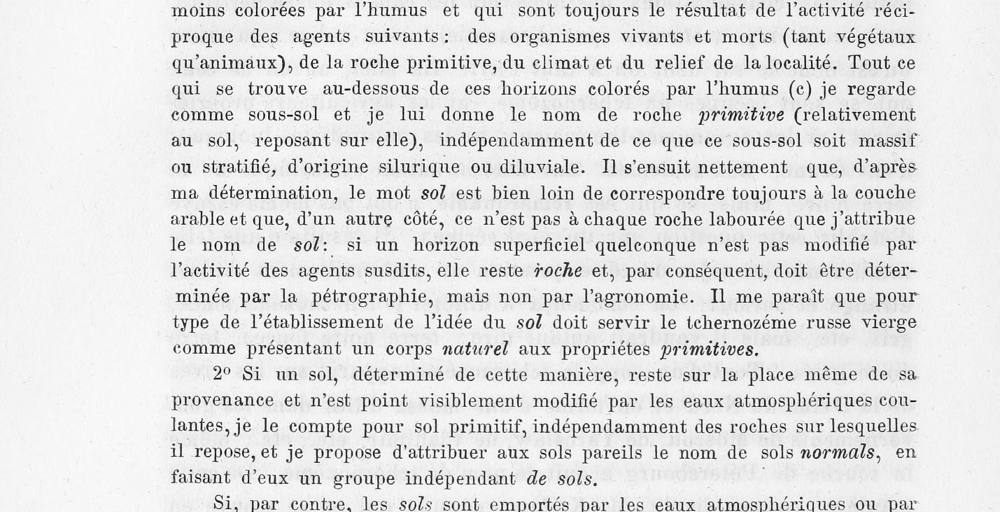
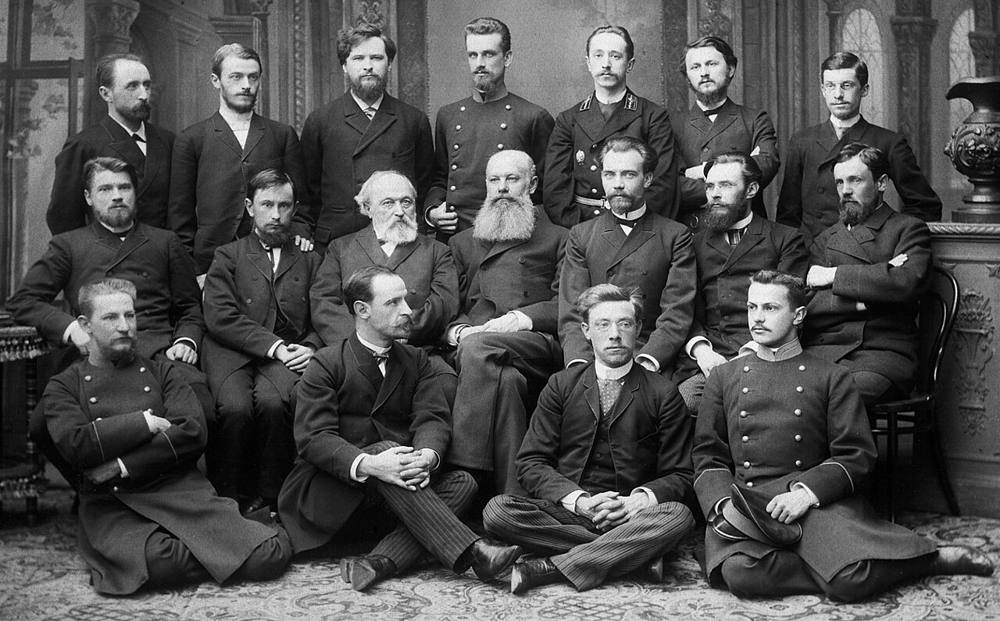

От речки Качни — к чернозёму на Всемирной выставке
Читается подряд. Нажми на удар — откроется подробный разбор с источниками.
Василий Докучаев родился 17 февраля 1846 года по старому стилю в селе Милюково Сычёвского уезда Смоленской губернии, младшим из семерых детей сельского священника.Узнать подробнееСвернуть
Он с отличием окончил Смоленскую духовную семинарию и в 1867 году поступил в Петербургскую духовную академию. Проучился там всего три недели и перешёл на естественное отделение физико-математического факультета Петербургского университета. На учёбу и жизнь зарабатывал репетиторством.
Источники: Русское географическое общество, «„Дороже золота — русский чернозем“: 180 лет назад родился основоположник почвоведения Василий Докучаев»; «Природа России», «Основоположник генетического почвоведения (к 170-летию В. В. Докучаева)».
Профессор Пузыревский посоветовал студенту летом пройти по родной речке и записать всё, что он увидит. Так в 1871 году появилась дипломная работа о наносах речки Качни.Узнать подробнееСвернуть
Больше двадцати разрезов сделал студент в долине Качни, нашёл кости мамонта и раковины древнего моря. В 1878 году Докучаев защитил магистерскую диссертацию о том, как образовались речные долины Европейской России. Уже тогда, изучая самые молодые отложения, он заинтересовался самым верхним слоем — почвой.
Источники: «Природа России» (к 170-летию В. В. Докучаева); Русское географическое общество (к 180-летию).
После засух 1873 и 1875 годов Вольное экономическое общество в 1876 году создало комиссию по изучению русского чернозёма. Свою программу предлагал и П. А. Костычев, но общество выбрало программу Докучаева и поручило полевую часть ему самому.Узнать подробнееСвернуть
В комиссию вошли химик А. Ходнев, агроном А. Советов, зоолог М. Богданов и геолог Докучаев; позже в её работе участвовали А. Иностранцев, А. Бутлеров и Д. Менделеев.
Источники: В. Докучаев, «Tchernozéme (terre noire) de la Russie d’Europe» (СПб., 1879), предисловие общества; «Природа России» (к 170-летию); Русское географическое общество (к 180-летию).
Докучаев изъездил чернозёмную полосу и в каждой точке целинной степи брал три образца: сам слой почвы, переходный слой и материнскую породу под ними.Узнать подробнееСвернуть
Образцы он старался брать на ровных местах: такое залегание чернозёма Докучаев считал единственно нормальным. Если целина была распахана, из слоя почвы он брал два образца — из пахотного слоя и ниже него.
Источник: В. Докучаев, «Tchernozéme (terre noire) de la Russie d’Europe» (СПб., 1879), с. 28–29.
Агрономия называла всё, что ниже пахотного слоя, подпочвой. Докучаев показал, что почва и пашня — не одно и то же. На чернозёме пахотный слой забирает лишь треть или даже четверть почвы. А почвы севера редко толще 5–6 дюймов — плуг легко доходит до материнской породы.Узнать подробнееСвернуть
Но тогда подпочвой пришлось бы называть и сам типичный чернозём, «что, очевидно, было бы совсем неверно».
Источник: В. Докучаев, «Tchernozéme (terre noire) de la Russie d’Europe» (СПб., 1879), с. 28–29.
В отчёте 1879 года Докучаев дал определение. Почва — это всегда результат совместной работы четырёх агентов: живых и мёртвых организмов, материнской породы, климата и рельефа местности.Узнать подробнееСвернуть
В авторском примечании он пишет (перевод с французского):
«…под словом „почва“ я понимаю <…> минерально-органические образования, лежащие на поверхности, всегда более или менее окрашенные перегноем и всегда представляющие результат взаимной деятельности следующих агентов: живых и мёртвых организмов (как растительных, так и животных), материнской породы, климата и рельефа местности».
Слой, которого эти агенты не изменили, по Докучаеву, остаётся горной породой, даже если его пашут. Изучать его должна петрография, а не агрономия.

В. Докучаев, «Tchernozéme (terre noire) de la Russie d’Europe» (СПб., 1879), с. 46: авторское примечание с определением почвы. Экземпляр библиотеки Министерства сельского хозяйства США, Internet Archive; общественное достояние. Источник: В. Докучаев, «Tchernozéme (terre noire) de la Russie d’Europe. Comptes-rendus» (СПб.: Императорское Вольное экономическое общество, 1879), с. 45–46.
Образцом, на котором надо строить само понятие почвы, Докучаев назвал русский целинный чернозём — «природное тело» с первоначальными свойствами.Узнать подробнееСвернуть
«Мне кажется, что образцом для установления понятия почвы должен служить русский целинный чернозём, как представляющий природное тело с первоначальными свойствами» (перевод с французского).
Там же он делит почвы на «нормальные», которые лежат там, где образовались, и «аномальные», которые вода или ветер унесли с места рождения.
Источник: В. Докучаев, «Tchernozéme (terre noire) de la Russie d’Europe» (СПб., 1879), с. 46.
У почвы, по Докучаеву, есть возраст. В речных долинах он лишь дважды нашёл слабые зачатки настоящего чернозёма, а в соседних степях тот порой доходил до трёх футов и больше: значит, долины моложе степного чернозёма.Узнать подробнееСвернуть
«Это обстоятельство позволяет мне прямо заключить, что наши речные долины моложе чернозёма соседних степей» (перевод с французского). Позже возраст страны стал у Докучаева пятым фактором почвообразования.
Источники: В. Докучаев, «Tchernozéme (terre noire) de la Russie d’Europe» (СПб., 1879), с. 28; «Природа России» (к 170-летию) — лекция 1900 года в Полтаве с «возрастом страны» среди почвообразователей.
В 1883 году вышла книга «Русский чернозём», и в декабре Докучаев защитил её как докторскую диссертацию. Одним из оппонентов был Дмитрий Менделеев.Узнать подробнееСвернуть
В этой книге, по словам портала «Природа России», впервые достаточно полно изложены положения о почве как самостоятельном естественно-историческом теле, о факторах почвообразования и генетических типах почв. 1883 год считают годом рождения генетического почвоведения. В 1885 году за книгу Докучаев получил полную Макарьевскую премию Академии наук.
Источники: «Природа России» (к 170-летию); Русское географическое общество (к 180-летию). Дата защиты в источниках расходится — 19 и 23 декабря 1883 года, поэтому день мы не называем.
Своих учеников Докучаев водил по губерниям: в 1882–1886 годах — по Нижегородской, потом по Полтавской. Так сложилась докучаевская школа почвоведов.Узнать подробнееСвернуть
Нижегородская экспедиция издала 14 выпусков «Материалов к оценке земель» — по одному на уезд. В Полтавской губернии с ним работал В. И. Вернадский. В 1888 году при Вольном экономическом обществе Докучаев учредил Почвенную комиссию — первую в России организацию почвоведов.

В. В. Докучаев и А. В. Советов с учениками, 1892–1893 годы. Среди учеников — К. Д. Глинка, Г. И. Танфильев, П. В. Отоцкий. Петербургский фотосалон, фотограф неизвестен; Викисклад, общественное достояние. Источники: Русское географическое общество (к 180-летию); «Природа России» (к 170-летию).
В 1889 году коллекцию русских почв Докучаева показали на Всемирной выставке в Париже. Ему присудили золотую медаль и французский орден «За заслуги по земледелию».Узнать подробнееСвернуть
Почвенную коллекцию, карты и научные работы Докучаев выставил с помощью ученика — В. И. Вернадского, который тогда стажировался в Париже.
Источники: Русское географическое общество (к 180-летию); «Воронежская энциклопедия», статья «Докучаев Василий Васильевич».
В 1900 году в Париж привезли монолит воронежского чернозёма размером в кубическую сажень. После выставки его по жребию отдали Сорбонне, а в 1968 году, во время студенческих волнений, монолит разбили.Узнать подробнееСвернуть
Образец взяли близ целины Каменной степи в Воронежской губернии и поставили на высокий пьедестал; экспозиция Докучаева и его учеников получила Гран-при. Рассказ о том, что русский чернозём хранится в Париже как «эталон», источниками не подтверждается. Сам Докучаев умер в 1903 году, а в 1904-м в Петербурге открылся почвенный музей его имени.
Источники: Русское географическое общество (к 180-летию); «Воронежская энциклопедия».